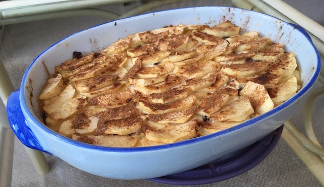

Apple Quark Bake
Ingredients:
-
500g of Quark (must be drained)
-
1-2 tbsp of Sugar
-
70g of Vegan Butter
-
7 tbsp of Semolina
-
1 tbsp of Corn Flour
-
1 tsp of Vanilla Extract
-
1 tbsp of Vanilla Extract (optional)
-
4 Apples
-
Cinnamon
-
Optional: Dried Cranberries, Granulated Sugar

Method:
-
Drain the quark and make sure the margarine is at room temperature.
-
Prepeare the apples by peeling, coring two apples and cut into thin slices and the other two need to be diced.
-
Mix the margarine with the sugar well.
-
Add the vanilla into the mixture.
-
Add this mixture into the quark and mix until smooth and even.
-
Lightly grease the baking pan.
-
Lay out the diced apples onto the base of the baking pan and sprinkle them with cinnamon.
-
Lay out the quark mixture on top of the apples and spread out so that it is even and it covers the apples.
-
Neatly, lay out the sliced apples on top of the quark in a fish-scale pattern and sprinkle them with the granulated sugar and cinnamon.
-
Put it in the oven for 30-35 minutes.
-
Make sure it cools down fully before cutting.